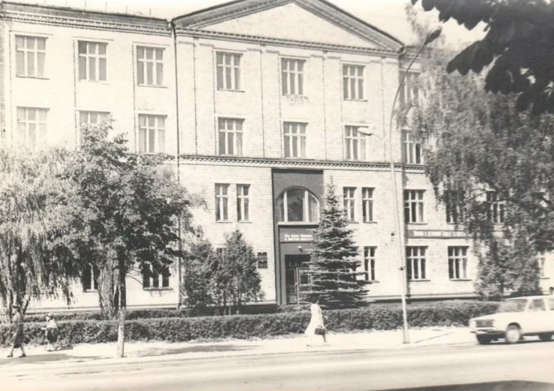
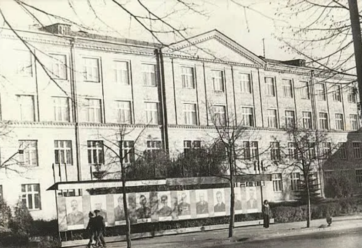
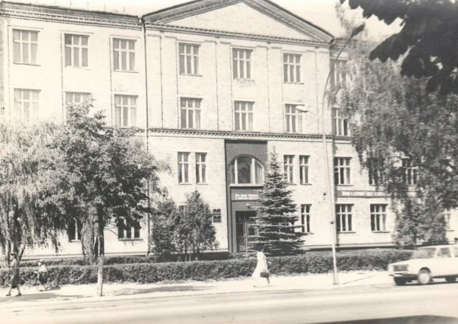
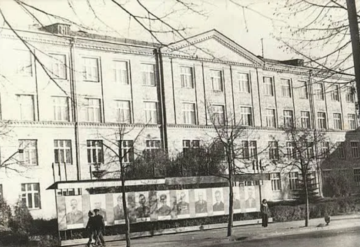

Барановичский технологический колледж Белкоопсоюза
Образование, традиции и будущее кооперативной отрасли

Образование, традиции и будущее кооперативной отрасли
Барановичский технологический колледж Белкоопсоюза — одно из ведущих средних специальных учебных заведений Брестской области. Колледж был основан в 1965 году как Барановичское кооперативное училище и с тех пор готовит квалифицированные кадры для потребительской кооперации и других отраслей экономики.
На протяжении десятилетий учебное заведение развивалось вместе с городом: обновлялась материально-техническая база, внедрялись новые специальности, расширялись международные связи. Сегодня колледж сочетает богатые традиции кооперативного образования с современными требованиями к подготовке специалистов.
Адрес: 225409, Республика Беларусь, Брестская область, г. Барановичи, ул. Кирова, д. 31.
В колледже обучают по таким специальностям, как «Экономика и организация производства», «Торговое дело», «Поварское и кондитерское дело», «Информационные системы и технологии» и другим востребованным направлениям.
Студенты колледжа активно участвуют в олимпиадах, конкурсах профессионального мастерства, спортивных и культурных мероприятиях. Многие выпускники успешно продолжают обучение в вузах или трудоустраиваются в ведущие предприятия Беларуси и за рубежом.
 



Если у вас есть архивные фотографии или воспоминания, связанные с колледжем, — поделитесь с нами!